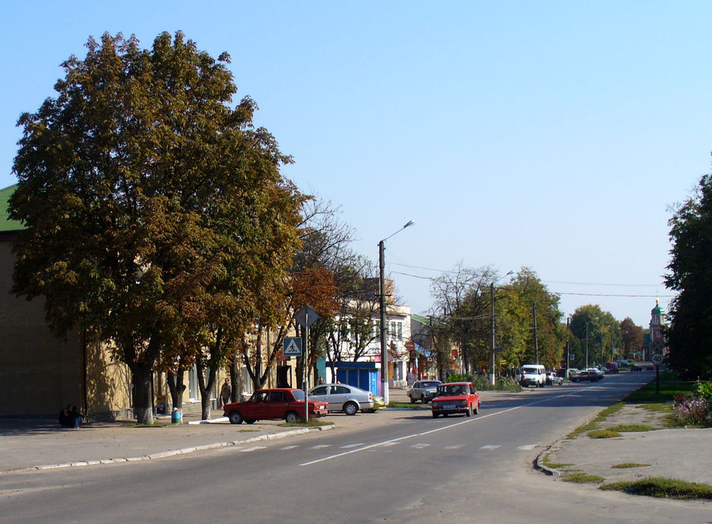

Пінчук Артур Юрійович
08.08.2002 м.Могилів-Подільський
Школа: НВК#4 ліцей, м.Могилів-Подільський
Університет: НТУУ "КПІ"
Улюблені книги:
Хоро́л — місто в Україні, у Лубенському районі Полтавської області. Має статус історичного населеного місця.
Місто Хорол розташоване у південній частині Придніпровської низовини на березі річки Рудка, яка через 4 км впадає в річку Хорол. Примикає до сіл Вишняки та Лісянщина.
